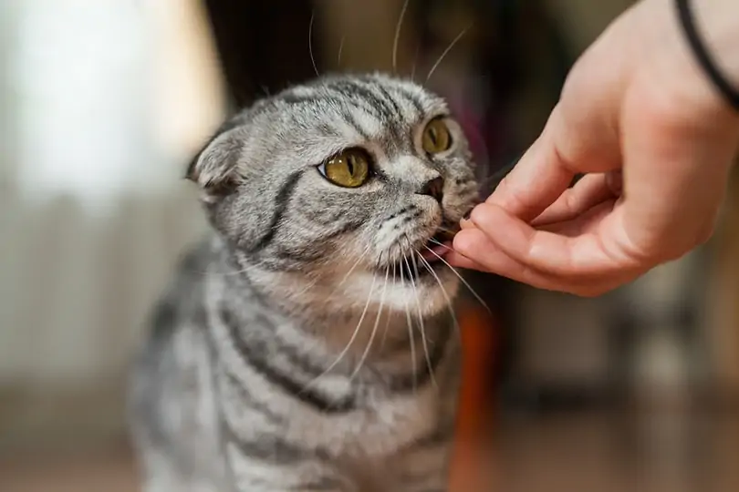

Homemade cat food with Tuna and Oatmeal

Tuna is every cat's favourite. I cannot leave a dish without some Tuna combined with Oatmeal
INGREDIENTS:
- 3 oz steam-cooked tuna (no salt or seasoning)
- 1/4 cup cooked oatmeal
- 1/4 teaspoon olive oil
- 1/8 teaspoon Rx Vitamins Nutritional Support
INSTRUCTIONS:
Mix the ingredients right before serving. Feed them and your cat will be in heaven.(not literally!)